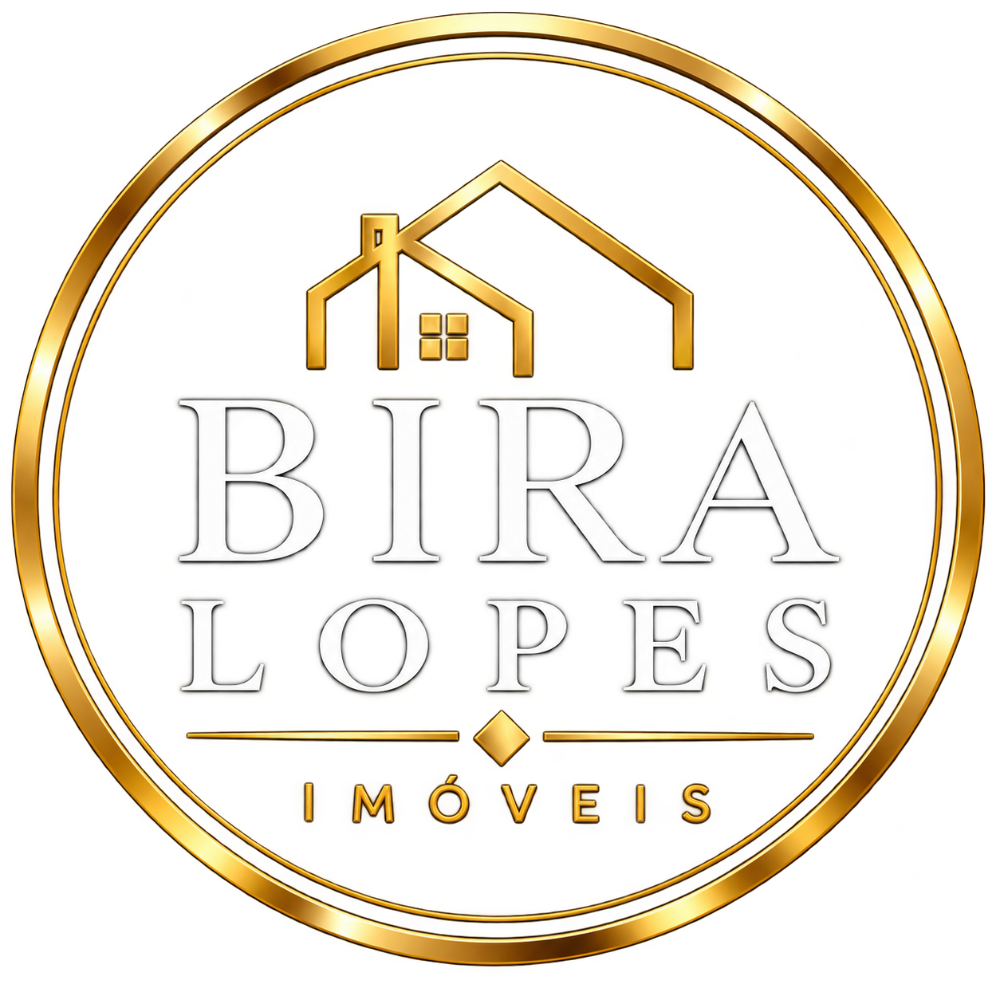

Seleção de oportunidades
Imóveis apresentados de acordo com suas necessidades e objetivos.

Bira Lopes Consultor ImobiliárioImóveis em São Luís · Maranhão
Imóveis de médio e alto padrão, com atendimento personalizado para você encontrar o lugar certo.
Seleção especial
Conheça algumas oportunidades selecionadas para você.
Imóveis, imagens e valores meramente ilustrativos, apresentados como exemplo.
O consultor
Atuo com imóveis de médio e alto padrão, oferecendo atendimento personalizado para quem deseja comprar ou alugar um imóvel.
Meu objetivo é ajudar você a encontrar uma oportunidade alinhada às suas necessidades, com atenção aos detalhes e acompanhamento durante sua jornada imobiliária.
Bira Lopes · Consultor Imobiliário · CRECI 6103
Entre em contatoComo posso ajudar
Imóveis apresentados de acordo com suas necessidades e objetivos.
Acompanhamento próximo durante sua busca pelo imóvel ideal.
Uma apresentação de oportunidades em São Luís e região.
Seu próximo capítulo começa aqui
Entre em contato para conhecer as oportunidades e conversar sobre o que você procura.
WhatsApp: +55 (98) 8865-9130